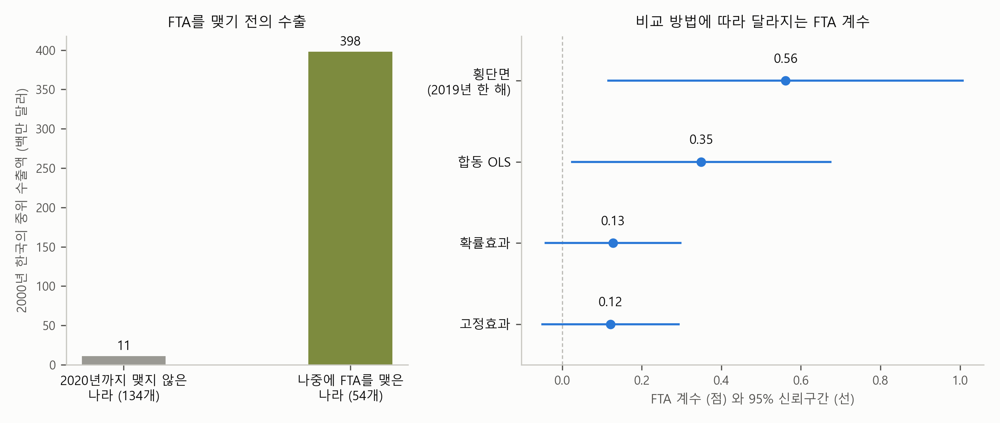

1. 보고서 — FTA는 한국의 수출을 늘렸나#
이번 장의 주제는 패널 데이터(panel data) 분석입니다. 같은 대상을 여러 시점에 걸쳐 반복해서 관측한 자료를 분석하는 방법입니다. 같은 대상을 추적 관찰하는 셈이죠. 같은 나라의 경제를 해마다, 같은 회사의 실적을 분기마다, 같은 학생의 성적을 학기마다 기록한 자료가 모두 패널 데이터입니다. 경제학과 경영학의 실증 연구에서 가장 흔히 쓰이는 자료이고, 국제무역에서는 특히 그렇습니다. 나라와 나라 사이의 교역은 해마다 기록되니까요. 정부가 정책의 효과를 따질 때도 이런 자료를 씁니다. 예를 들어 주 52시간 근무제는 2018년 큰 기업부터 시작해 2021년까지 기업 규모에 따라 차례로 적용됐는데, 같은 기업들의 고용과 근로시간을 해마다 따라가면 이 제도가 무엇을 바꿨는지 따져 볼 수 있습니다. 기업이 여러 지점의 매출을 달마다 비교할 때도 마찬가지입니다.
예전에는 이 분석을 직접 배워 직접 돌려야 했습니다. 요즘은 AI에게 데이터를 넣어 주고 분석해 달라고 하면 금방 해줍니다. 우리는 AI가 만들어 준 보고서를 잘 이해하고, 잘 점검하면 됩니다. AI가 해 주는 것, 잘 이해하기. 그게 우리의 일입니다.
이번 장의 예시는 FTA(자유무역협정)와 수출입니다. 한국이 어떤 나라와 FTA를 맺으면, 그 나라로의 수출이 늘어날까요? 단순회귀분석 장과 다중회귀분석 장의 아파트 거래, 횡단면 분석 장의 건강 조사는 모두 여러 대상을 한 시점에 관측한 자료, 즉 횡단면 자료였습니다. 여러 대상을 사진 한 장에 담은 것과 같죠. 이번 장의 자료는 같은 나라들을 26년 동안 해마다 따라간 기록, 즉 패널 데이터입니다. 횡단면이 사진 한 장이라면, 패널 데이터는 해마다 찍은 사진을 모은 사진첩입니다. 같은 질문이라도 자료의 구조가 달라지면 답하는 방법도, 답 자체도 달라질 수 있습니다. 이번 장이 보여 주려는 것이 바로 그것입니다.
데이터 — 한국과 206개국의 26년#
데이터는 프랑스의 국제경제 연구소인 CEPII가 공개한 Gravity 데이터베이스(2022년 11월 판)입니다. 무역 연구에서 널리 쓰이는 자료로, 세계의 나라를 두 나라씩 묶어(한국과 미국, 프랑스와 일본처럼) 1948년부터 해마다 두 나라 사이의 교역액, 각 나라의 GDP, 두 나라 사이의 거리, 두 나라가 맺은 무역협정 같은 정보를 모아 두었습니다. 누구나 내려받을 수 있고, 출처를 밝히면 가공해서 다시 배포해도 됩니다. 그래서 이번 장의 자료도 이 책의 사이트에서 함께 제공합니다.
원래 자료에는 한국에서 미국으로, 미국에서 한국으로처럼 수출하는 나라와 수입하는 나라의 조합별로 해마다 기록이 하나씩 있습니다. 이번 장에서는 설명을 단순하게 하려고, 수출하는 나라를 한국으로 고정했습니다. 그러면 자료는 “한국이 각 나라에 해마다 얼마를 수출했나”가 됩니다. 원래 자료는 1948년부터 있지만, 이번 장에서는 1995년부터 2020년까지 26년을 선택했습니다. 2020년은 이 데이터셋에서 교역액이 들어 있는 마지막 해입니다. 그리고 시작을 1995년으로 잡은 데는 세 가지 이유가 있습니다. 세계무역기구(WTO)가 출범해 지금의 무역 질서가 시작된 해이고, 소련 해체 등으로 1990년대 초에 새로운 나라들이 생겨나던 일이 일단락된 때입니다. 그리고 한국의 첫 FTA(2004년)보다 9년 앞서므로, FTA를 맺기 전의 모습을 충분히 볼 수 있습니다.
이 26년 동안의 자료에는 한국의 수출 상대국 206개국이 들어 있습니다. 206개국 가운데 150개국은 26년 기록이 모두 있고, 나머지는 몇 해가 빠져 있습니다. 206개국의 26년 가운데 한국의 수출 금액과 상대국의 GDP가 모두 기록된 나라와 해만 남기면, 관측은 4,909개가 됩니다.
변수는 4개만 사용합니다.
수출: 한국이 그 나라에 그해 수출한 금액(한국이 보고한 값, 명목 달러)
상대국 GDP: 그 나라의 그해 경제 규모(명목 달러)
거리: 한국과 그 나라 사이의 거리(두 나라 도시들 사이의 거리를 인구로 가중해 평균한 값, km)
FTA 더미 변수: 그해에 한국과 그 나라 사이에 FTA가 발효돼 있으면 1, 아니면 0
왜 하필 GDP와 거리일까요? 두 나라 사이의 교역은 두 나라의 경제 규모가 클수록 많고, 서로 멀리 떨어져 있을수록 적습니다. 이 관계를 회귀식으로 쓴 것을 중력모형(gravity model)이라고 부릅니다. 이름은 뉴턴의 만유인력 법칙에서 왔습니다. 두 물체가 서로 끌어당기는 힘이 두 물체의 질량이 클수록 세고 거리가 멀수록 약하듯이, 두 나라의 교역도 질량 대신 GDP가 클수록 많고 거리가 멀수록 적다는 것이죠. 1962년 네덜란드의 경제학자 얀 틴베르헌(Jan Tinbergen)이 이 생각을 처음 회귀분석으로 보인 뒤로(Tinbergen, 1962)[1], 중력모형은 무역을 분석하는 가장 기본적인 틀이 되었습니다. CEPII의 데이터베이스 이름이 Gravity인 것도 중력모형에 쓰는 변수를 모아 두었기 때문입니다. 이 장의 회귀식도 중력모형입니다. 수출하는 나라가 늘 한국이니 상대국 GDP와 거리만 넣고, 여기에 FTA를 더했습니다.
FTA 변수가 이 자료의 주인공입니다. 1995년에는 한국과 FTA를 맺은 나라가 하나도 없었습니다. 이 자료의 연도로 보면, 2004년 칠레를 시작으로 싱가포르(2006), 아세안 국가들(2010), EU 국가들과 미국(2012), 오스트레일리아(2015), 중국(2016)으로 늘어나, 2020년에는 54개국이 됩니다. FTA는 다중회귀분석 장에서 소개한 더미 변수입니다. 같은 나라가 어느 해까지는 0이었다가 어느 해부터 1이 되는 것이죠.
FTA를 맺으면 수출이 늘까#
자, 이제 질문입니다. 한국이 어떤 나라와 FTA를 맺으면, 그 나라로의 수출이 늘어날까요? 늘어난다면 얼마나 늘어날까요?
당연히 늘지 않겠느냐고 생각할 수 있습니다. 관세가 낮아지니까요. 그런데 자료로 이 질문에 답하려고 하면 생각보다 까다롭습니다. FTA를 맺은 나라로의 수출이 많다는 것은 쉽게 확인됩니다. 하지만 그것이 FTA 덕분인지, 원래 수출이 많던 나라와 FTA를 맺은 것인지는 따로 따져야 합니다. 패널 데이터는 이 둘을 가르는 데 쓸 수 있는 도구를 줍니다.
이 질문을 AI에게 맡겨 봤습니다. AI가 이 장의 자료 파일을 열어 분석하게 하고, 한 해의 자료만 쓰는 횡단면 회귀와 26년의 자료를 모두 쓰는 패널 데이터의 여러 추정 방법을 나란히 비교하는 1쪽 보고서를 요청했습니다. 그렇게 받은 보고서가 아래에 있습니다. 먼저 한 번 읽어 보세요. 고정효과, 확률효과, 하우스만 검정처럼 처음 보는 말이 나와도 괜찮습니다. 그 말들을 읽을 수 있게 만드는 것이 이 장의 일입니다.
AI가 만든 1쪽 보고서
FTA는 한국의 수출을 늘렸나 — 상대국 패널로 본 FTA와 수출
분석 대상: 한국의 수출 상대국 206개국 × 1995~2020년, 4,909개 관측 · 자료: CEPII Gravity V202211 (Conte, Cotterlaz, Mayer 2022), 수출은 한국이 보고한 명목 달러
요약
2019년 한 해의 나라들을 비교하면, 상대국 GDP와 거리 변수가 같을 때 한국과 FTA를 맺은 나라로의 수출이 75% 많다.
같은 나라를 FTA 전과 후로 비교하면(고정효과) 그 차이는 13%로 줄고, 0과 통계적으로 구별되지 않는다.
FTA를 맺은 나라는 FTA 전부터 한국의 큰 교역 상대였다. 2000년 중위 수출액이 3억 9,800만 달러로, 2020년까지 FTA를 맺지 않은 나라(1,100만 달러)의 36배다.

그림. 왼쪽: 2000년 한국의 중위 수출액, 2020년까지 FTA를 맺은 나라와 맺지 않은 나라. 오른쪽: 비교 방법별 FTA 계수(점)와 95% 신뢰구간(선).
추정 결과
로그(수출) = 로그(상대국 GDP) + 로그(거리) + FTA (고정효과: 나라마다 절편을 따로 둠)
횡단면 (2019년) |
합동 OLS |
확률효과 |
고정효과 |
|
|---|---|---|---|---|
로그(상대국 GDP) |
0.925 (0.065) |
0.982 (0.049) |
1.049 (0.040) |
1.056 (0.047) |
로그(거리) |
−1.012 (0.220) |
−0.904 (0.191) |
−0.962 (0.203) |
— |
FTA |
0.562 (0.227) |
0.349 (0.166) |
0.128 (0.086) |
0.121 (0.087) |
FTA의 \(p\)값 |
0.013 |
0.035 |
0.14 |
0.16 |
관측 수 |
200 |
4,909 |
4,909 |
4,909 |
주: 괄호는 표준오차(패널 세 열은 나라 단위 군집 표준오차), 하우스만 검정 1.51 (\(p\) = 0.47), 확률효과의 \(\theta\) 평균 0.90
해석
네 가지 비교 — 횡단면은 한 해의 나라끼리 비교한다. 합동 OLS는 26년을 한데 모아, 같은 나라의 변화와 나라끼리의 차이를 구별하지 않고 함께 쓴다. 고정효과는 나라마다 자기 평균에서 벗어난 만큼, 즉 같은 나라의 변화만 비교한다. 확률효과는 같은 나라의 변화와 나라끼리의 차이를 섞어 쓴다.
FTA — 나라끼리 비교하는 횡단면과 합동 OLS에서 크게 나온 FTA 계수가, 같은 나라의 변화를 보는 고정효과에서는 0.12로 줄었다. 앞의 두 숫자에는 FTA 상대국이 원래 한국과 교역이 많던 나라라는 차이가 섞여 있다.
상대국 GDP — 모든 비교에서 1 안팎이다. 상대국 GDP가 1% 크면 한국의 수출이 약 1% 많다.
거리 — 해마다 변하지 않는 변수라 고정효과로는 추정할 수 없다. 확률효과에서는 −0.96으로, 거리가 1% 멀면 수출이 약 1% 적다.
확률효과와 고정효과 — 나라마다 관측한 해가 길어(대부분 26년) 확률효과가 고정효과 쪽으로 기울었고(\(\theta\) 0.90), FTA와 GDP의 계수가 거의 같다. 하우스만 검정도 둘의 차이를 기각하지 못한다.
한계
고정효과는 나라마다 변하지 않는 차이를 지우지만, FTA와 같은 시기에 함께 변한 다른 요인(환율, 세계 교역의 흐름, 다른 무역 정책)은 지우지 못한다.
FTA 효과는 발효 뒤 모든 해의 평균으로 보았고, 해가 지나며 커지는지는 따로 보지 않았다.
보고서 내려받기: PDF(그림 포함) · 원문(.md)
보고서의 다섯 부분#
보고서는 다른 장의 보고서와 같이 다섯 부분으로 되어 있습니다. 요약, 그림, 추정 결과, 해석, 그리고 한계입니다.
요약은 세 줄입니다. 첫 줄은 2019년 한 해만 보면 FTA를 맺은 나라로의 수출이 75% 많다는 것입니다. 둘째 줄은 같은 나라를 FTA 전과 후로 비교하면 그 차이가 13%로 줄고, 통계적으로 0과 구별되지 않는다는 것입니다. 같은 자료로 같은 질문을 했는데, 비교하는 방법에 따라 75%가 13%가 되었습니다. 셋째 줄이 그 실마리입니다. FTA를 맺은 나라는 FTA를 맺기 전부터 한국의 큰 교역 상대였습니다.
그림은 두 패널입니다. 왼쪽 패널은 2000년, 그러니까 한국의 첫 FTA(2004년)보다 앞선 해의 한국 수출을 상대국에 따라 둘로 나눠 보여 줍니다. 나중에 FTA를 맺게 되는 나라들과, 2020년까지 맺지 않은 나라들입니다. 앞의 나라들로의 수출이 이미 훨씬 많습니다. 오른쪽 패널은 FTA의 계수를 네 가지 비교 방법으로 추정한 결과를 점과 선으로 나란히 그렸습니다. 위에서 아래로 갈수록 숫자가 작아지고, 아래 두 개는 신뢰구간(선)이 0에 걸쳐 있습니다.
추정 결과의 표에서 행은 변수(상대국 GDP, 거리, FTA)이고, 열은 추정 방법(횡단면, 합동 OLS, 확률효과, 고정효과)입니다. 같은 회귀식을 네 가지 방법으로 추정해 나란히 놓은 것이죠. 눈여겨볼 곳이 둘 있습니다. 하나는 FTA 행이 왼쪽에서 오른쪽으로 갈수록 작아진다는 것이고, 다른 하나는 고정효과 열의 거리 칸이 비어 있다는 것입니다. 표 아래 통계 줄의 하우스만 검정과 \(\theta\)는 이 장의 마지막 두 절에서 다룹니다.
해석은 네 가지 비교가 각각 무엇을 비교하는지부터 설명하고, FTA, 상대국 GDP, 거리의 계수를 읽은 뒤, 확률효과와 고정효과의 관계로 끝납니다. 한계는 두 줄입니다. 고정효과로도 지우지 못하는 것이 있다는 것, 그리고 FTA 효과를 발효 뒤 모든 해의 평균으로 보았고, 해가 지나며 커지는지는 따로 보지 않았다는 것입니다.
이 장의 진행 순서#
다음 네 절이 이 보고서를 한 부분씩 설명합니다.
단체 사진과 사진첩 — 횡단면과 패널은 무엇이 다른가. 한 해만 보면 왜 FTA 효과가 75%로 나오는가. 요약의 첫 줄과 표의 횡단면 열.
어제의 나와 비교하기 — 고정효과는 무엇을 하는가. 75%는 어떻게 13%가 되는가, 그리고 거리 변수는 왜 사라지는가. 요약의 둘째 줄과 표의 고정효과 열.
두 가지 차이를 섞기 — 확률효과는 무엇을 하는가. \(\theta\)란 무엇이고, 이 자료에서는 왜 확률효과가 고정효과와 거의 같은가. 표의 확률효과 열.
무엇을 고르나 — 하우스만 검정은 무엇을 맞대 보는가. 모든 나라에 함께 일어난 변화를 떼어 내는 연도 효과, 그리고 이 장을 마치며.
네 절을 지나면 이 보고서의 모든 줄을 이해할 수 있습니다. 그리고 여러분이 자기 패널 자료로 같은 분석을 요청할 때, 이 보고서가 본보기가 될 것입니다.